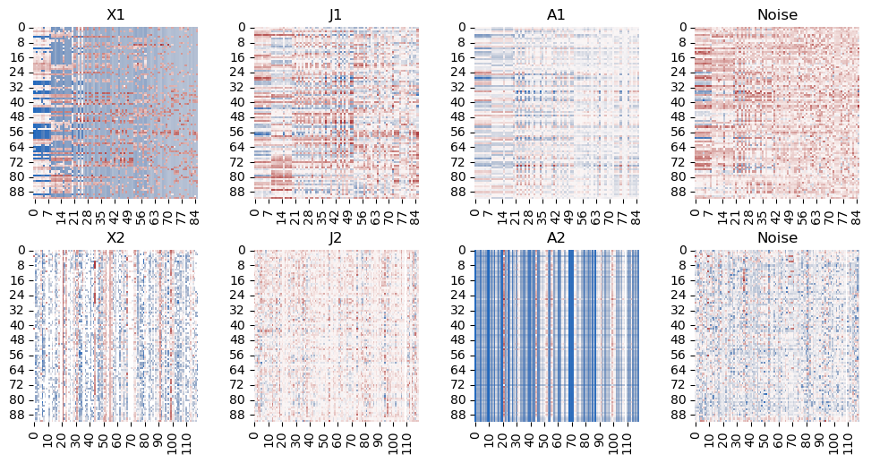

[255]:
import numpy as np
from scipy.linalg import subspace_angles
from numpy import linalg as LA
import seaborn as sns
import matplotlib.pyplot as plt
import pandas as pd
import numpy as np
from igPCA.igPCA import igPCA
from sklearn.metrics import classification_report
from sklearn.ensemble import RandomForestClassifier
from sklearn.model_selection import train_test_split
from igPCA.GMD import GMD
from sklearn.metrics import f1_score
from sklearn import metrics
[224]:
# setting info
r1 = 12
r2 = 10
[226]:
def read_data(filename, ncols=None):
if ncols == None:
with open(filename) as f:
ncols = len(f.readline().split(','))
data = np.loadtxt(filename, delimiter=',',
skiprows=1, usecols=range(1, ncols))
return data
def normalize_matrix(H):
t = np.trace(H)
n = np.shape(H)[0]
H = H/t*n
return H
[ ]:
# read data
description = pd.read_csv('../real/nf.description.csv', index_col=0)
taxa = pd.read_csv('../real.nf/taxa.csv', index_col=0)
Q2 = read_data('../real.nf/Q2.csv', None)
H = read_data('.../real.nf/unifrac.csv', None)
Q1 = read_data('../real.nf/Q1.csv', None)
X1 = read_data('../real.nf/X1.csv', None)
X2 = read_data('../real.nf/X2.csv', 120)
[227]:
# categories
description['classification'] = description['diet'].values == 'Breast milk'
description['classification'] = description['classification'].astype('category')
description['classification'] = description['classification'].cat.rename_categories(['Formula Feed', 'Breast Feed'])
H = normalize_matrix(H)
Q1 = normalize_matrix(Q1)
Q2 = normalize_matrix(Q2)
n, p1 = np.shape(X1)
_, p2 = np.shape(X2)
[228]:
# init models
model1 = igPCA(X1, X2, H, Q1, Q2, r1, r2)
model2 = igPCA(X1, X2, np.eye(n), np.eye(p1), np.eye(p2), r1,r2)
model3 = igPCA(X1, X2, np.eye(n), np.eye(p1), np.eye(p2), r1,r2) #use the same joint rank as igPCA
model4 = igPCA(X1, X2, np.eye(n), np.eye(p1), np.eye(p2), r1,r2) #use joint rank = 2
model5 = GMD(X1, H, Q1, r1)
model6 = GMD(X2, H, Q2, r2)
[229]:
# fit GMD
model4.fit(r0=2, thres=None)
model5.fit()
model6.fit()
joint rank selection
[230]:
def compute_drop(s):
n = len(s) - 1
diff = [s[i-1]-s[i] for i in range(1, n+1)]
cutoff = np.argmax(np.array(diff))
break_point = s[cutoff]
dis = (s[cutoff] - s[cutoff+1])/10
return ((break_point-dis, cutoff))
[254]:
U1, U2, X_1_tilde, X_2_tilde = model1.__joint_ingredient__()
joint_prod = model1.__H_inner_prod__(U1, U2)
_, s, _ = LA.svd(joint_prod, full_matrices=False, compute_uv=True)
plt.plot(s, 'r*')
plt.axhline(compute_drop(s)[0], color = 'b', linestyle = '-')
plt.title("igPCA: Singular value of Joint Evaluation")
plt.show()
# fit integrative models
model1.fit(r0=compute_drop(s)[1]+1, thres=None)
[232]:
U1, U2, X_1_tilde, X_2_tilde = model2.__joint_ingredient__()
joint_prod = model2.__H_inner_prod__(U1, U2)
_, s, _ = LA.svd(joint_prod, full_matrices=False, compute_uv=True)
plt.plot(s, 'r*')
plt.axhline(y = compute_drop(s)[0], color = 'b', linestyle = '-')
plt.title("JIVE: Singular value of Joint Evaluation")
plt.show()
# fit model
model2.fit(r0=compute_drop(s)[1]+1, thres=None)
[233]:
# fit model 3
model3.fit(r0=model1.r0, thres=None)
Visualization
Heatmap of Low Rank Structure
Inspired by JIVE paper
[234]:
def heatmap_low_rank(model):
fig, axes = plt.subplots(2, 4, figsize=(10, 5))
plt.tight_layout(h_pad=2)
sns.heatmap(model.X1, ax=axes[0, 0], cbar=False, cmap=sns.color_palette("vlag", as_cmap=True),mask=(model.X1==0))
axes[0, 0].set_xlabel('')
axes[0, 0].set_ylabel('')
axes[0, 0].set_title('X1')
sns.heatmap(model.J1_hat, ax=axes[0, 1], cbar=False, cmap=sns.color_palette("vlag", as_cmap=True),mask=(model.J1_hat==0))
axes[0, 1].set_xlabel('')
axes[0, 1].set_ylabel('')
axes[0, 1].set_title('J1')
sns.heatmap(model.A1_hat, ax=axes[0, 2], cbar=False, cmap=sns.color_palette("vlag", as_cmap=True),mask=(model.A1_hat==0))
axes[0, 2].set_xlabel('')
axes[0, 2].set_ylabel('')
axes[0, 2].set_title('A1')
sns.heatmap(model.X1-model.X_1_hat, ax=axes[0, 3], cbar=False, cmap=sns.color_palette("vlag", as_cmap=True),mask=(model.X1-model.X_1_hat==0))
axes[0, 3].set_xlabel('')
axes[0, 3].set_ylabel('')
axes[0, 3].set_title('Noise')
sns.heatmap(model.X2, ax=axes[1,0], cbar=False, cmap=sns.color_palette("vlag", as_cmap=True),mask=(model.X2==0))
axes[1, 0].set_xlabel('')
axes[1, 0].set_ylabel('')
axes[1, 0].set_title('X2')
sns.heatmap(model.J2_hat, ax=axes[1,1], cbar=False, cmap=sns.color_palette("vlag", as_cmap=True),mask=(model.J2_hat==0))
axes[1, 1].set_xlabel('')
axes[1, 1].set_ylabel('')
axes[1, 1].set_title('J2')
sns.heatmap(model.A2_hat, ax=axes[1, 2], cbar=False, cmap=sns.color_palette("vlag", as_cmap=True),mask=(model.A2_hat==0))
axes[1, 2].set_xlabel('')
axes[1, 2].set_ylabel('')
axes[1, 2].set_title('A2')
sns.heatmap(model.X2-model.X_2_hat, ax=axes[1,3], cbar=False, cmap=sns.color_palette("vlag", as_cmap=True),mask=(model.X2-model.X_2_hat==0))
axes[1, 3].set_xlabel('')
axes[1, 3].set_ylabel('')
axes[1, 3].set_title('Noise')
[235]:
# igPCA, more positive components compared with JIVE
heatmap_low_rank(model1)

[236]:
# JIVE 1
heatmap_low_rank(model2)
[237]:
#JIVE 2
heatmap_low_rank(model3)
Variation Explained
[238]:
def compute_QH_norm(H, Q, A):
numeric_1 = np.matmul(H, A)
numeric_2 = np.matmul(Q, np.transpose(A))
result = np.trace(np.matmul(numeric_1, numeric_2))
return (result)
def var_ingredient_x1(model):
def variation(model, U, D, V):
var_explained = [compute_QH_norm(model.H, model.Q1, U[:,i-1:i]*D[i-1:i]*V[:,i-1:i].T) for i in range(1, model.r1+1)]
var_explained = var_explained + [compute_QH_norm(model.H, model.Q1, model.X1 - model.X_1_hat)]
var_explained = var_explained/compute_QH_norm(model.H, model.Q1, model.X1)
return(var_explained)
D = np.concatenate((model.D01, model.D11))
index_sort = np.argsort(D)[::-1]
label_belonging = np.multiply((index_sort) < model.r0,1)
label = ['joint' * i + 'individual'*(1-i) for i in label_belonging] + ['noise']
label_color = ['tab:red' * i + 'tab:blue'*(1-i) for i in label_belonging] + ['tab:orange']
D = D[index_sort]
U = np.concatenate((model.U0, model.U1), axis = 1)[:,index_sort]
V = np.concatenate((model.V01, model.V11), axis = 1)[:,index_sort]
var_explained = variation(model, U, D, V)
return(label_color, label, var_explained, U, V)
def var_ingredient_x2(model):
def variation(model, U, D, V):
var_explained = [compute_QH_norm(model.H, model.Q2, U[:,i-1:i]*D[i-1:i]*V[:,i-1:i].T) for i in range(1, model.r2+1)]
var_explained = var_explained + [compute_QH_norm(model.H, model.Q2, model.X2 - model.X_2_hat)]
var_explained = var_explained/compute_QH_norm(model.H, model.Q2, model.X2)
return(var_explained)
D = np.concatenate((model.D02, model.D12))
index_sort = np.argsort(D)[::-1]
label_belonging = np.multiply((index_sort) < model.r0,1)
label = ['joint' * i + 'individual'*(1-i) for i in label_belonging] + ['noise']
label_color = ['tab:red' * i + 'tab:blue'*(1-i) for i in label_belonging] + ['tab:orange']
D = D[index_sort]
U = np.concatenate((model.U0, model.U2), axis = 1)[:,index_sort]
V = np.concatenate((model.V02, model.V12), axis = 1)[:,index_sort]
var_explained = variation(model, U, D, V)
return(label_color, label, var_explained, U, V)
[239]:
def total_variation_explained(label, var_explained):
label = np.array(label)
joint = sum(var_explained[label == 'joint'])
individual = sum(var_explained[label == 'individual'])
noise = sum(var_explained[label == 'noise'])
return((joint, individual, noise))
[240]:
fig, axes = plt.subplots(2, 4, figsize=(25, 10))
plt.tight_layout(h_pad=2)
axes[0, 0].bar(np.arange(1, model1.r1+2), var_ingredient_x1(model1)[2], color=var_ingredient_x1(model1)[0])
axes[0, 0].set_xlabel('PC')
axes[0, 0].set_ylabel('Variation Explained')
axes[0, 0].set_title('igPCA')
axes[0, 1].bar(np.arange(1, model1.r1+2), var_ingredient_x1(model2)[2], color=var_ingredient_x1(model2)[0])
axes[0, 1].set_xlabel('PC')
axes[0, 1].set_ylabel('Variation Explained')
axes[0, 1].set_title('JIVE 1')
axes[0, 2].bar(np.arange(1, model1.r1+2), var_ingredient_x1(model3)[2], color=var_ingredient_x1(model3)[0])
axes[0, 2].set_xlabel('PC')
axes[0, 2].set_ylabel('Variation Explained')
axes[0, 2].set_title('JIVE 2')
axes[0, 3].bar(np.arange(1, model1.r1+2), var_ingredient_x1(model4)[2], color=var_ingredient_x1(model4)[0])
axes[0, 3].set_xlabel('PC')
axes[0, 3].set_ylabel('Variation Explained')
axes[0, 3].set_title('JIVE 3')
axes[1, 0].bar(np.arange(1, model1.r2+2), var_ingredient_x2(model1)[2], color=var_ingredient_x2(model1)[0])
axes[1, 0].set_xlabel('PC')
axes[1, 0].set_ylabel('Variation Explained')
axes[1, 0].set_title('igPCA')
axes[1, 1].bar(np.arange(1, model1.r2+2), var_ingredient_x2(model2)[2], color=var_ingredient_x2(model2)[0])
axes[1, 1].set_xlabel('PC')
axes[1, 1].set_ylabel('Variation Explained')
axes[1, 1].set_title('JIVE 1')
axes[1, 2].bar(np.arange(1, model1.r2+2), var_ingredient_x2(model3)[2], color=var_ingredient_x2(model3)[0])
axes[1, 2].set_xlabel('PC')
axes[1, 2].set_ylabel('Variation Explained')
axes[1, 2].set_title('JIVE 2')
axes[1, 3].bar(np.arange(1, model1.r2+2), var_ingredient_x2(model4)[2], color=var_ingredient_x2(model4)[0])
axes[1, 3].set_xlabel('PC')
axes[1, 3].set_ylabel('Variation Explained')
axes[1, 3].set_title('JIVE 3')
plt.show()
[241]:
species = ("Joint", "Individual", "Noise")
penguin_means = {
'igPCA': total_variation_explained(var_ingredient_x1(model1)[1], var_ingredient_x1(model1)[2]),
'JIVE.1': total_variation_explained(var_ingredient_x1(model2)[1], var_ingredient_x1(model2)[2]),
'JIVE.2': total_variation_explained(var_ingredient_x1(model3)[1], var_ingredient_x1(model3)[2]),
'JIVE.3': total_variation_explained(var_ingredient_x1(model4)[1], var_ingredient_x1(model4)[2]),
}
x = np.arange(len(species)) # the label locations
width = 0.2 # the width of the bars
multiplier = 0
fig, ax = plt.subplots(layout='constrained')
for attribute, measurement in penguin_means.items():
offset = width * multiplier
rects = ax.bar(x + offset, measurement, width, label=attribute)
ax.bar_label(rects, padding=3)
multiplier += 1
# Add some text for labels, title and custom x-axis tick labels, etc.
ax.set_ylabel('Variation Explained')
ax.set_title('Variation Explained of X1')
ax.set_xticks(x + width, species)
ax.legend(loc='upper left', ncols=3)
ax.set_ylim(0, 1.2)
plt.show()
[242]:
species = ("Joint", "Individual", "Noise")
penguin_means = {
'igPCA': total_variation_explained(var_ingredient_x2(model1)[1], var_ingredient_x2(model1)[2]),
'JIVE.1': total_variation_explained(var_ingredient_x2(model2)[1], var_ingredient_x2(model2)[2]),
'JIVE.2': total_variation_explained(var_ingredient_x2(model3)[1], var_ingredient_x2(model3)[2]),
'JIVE.3': total_variation_explained(var_ingredient_x2(model4)[1], var_ingredient_x2(model4)[2]),
}
x = np.arange(len(species)) # the label locations
width = 0.2 # the width of the bars
multiplier = 0
fig, ax = plt.subplots(layout='constrained')
for attribute, measurement in penguin_means.items():
offset = width * multiplier
rects = ax.bar(x + offset, measurement, width, label=attribute)
ax.bar_label(rects, padding=3)
multiplier += 1
# Add some text for labels, title and custom x-axis tick labels, etc.
ax.set_ylabel('Variation Explained')
ax.set_title('Variation Explained of X2')
ax.set_xticks(x + width, species)
ax.legend(loc='upper left', ncols=3)
ax.set_ylim(0, 1.2)
plt.show()
Sample Score
[243]:
def first_two_pc_x1(model):
score = np.concatenate([var_ingredient_x1(model)[3][:,0:1], var_ingredient_x1(model)[3][:,1:2]], axis=1)
to_plot = pd.DataFrame(score, columns = ['PC1','PC2'], index = description.index)
to_plot['diet'] = description['classification']
return(to_plot)
def first_two_pc_x2(model):
score = np.concatenate([var_ingredient_x2(model)[3][:,0:1], var_ingredient_x2(model)[3][:,1:2]], axis=1)
to_plot = pd.DataFrame(score, columns = ['PC1','PC2'], index = description.index)
to_plot['diet'] = description['classification']
return(to_plot)
def first_two_joint_pc(model):
if model.r0 == 1:
score = model.U0[:,:1].reshape(-1,1)
to_plot = pd.DataFrame(score, columns = ['PC1'], index = description.index)
else:
score = np.concatenate([model.U0[:,:1].reshape(-1,1), model.U0[:,1:2].reshape(-1,1)], axis=1)
to_plot = pd.DataFrame(score, columns = ['PC1','PC2'], index = description.index)
to_plot['diet'] = description['classification']
return(to_plot)
[244]:
# first two joint PC
fig, axes = plt.subplots(1, 3, figsize=(16, 5))
plt.tight_layout(h_pad=2)
sns.scatterplot(data=first_two_joint_pc(model1), x="PC1", y="PC2", hue = "diet", ax=axes[0])
axes[0].set_xlabel('PC1')
axes[0].set_ylabel('PC2')
axes[0].set_title('igPCA')
axes[0].get_legend().set_visible(False)
sns.scatterplot(data=first_two_joint_pc(model3), x="PC1", y="PC2", hue = "diet", ax=axes[1])
axes[1].set_xlabel('diet')
axes[1].set_ylabel('PC1')
axes[1].set_title('JIVE.2')
sns.scatterplot(data=first_two_joint_pc(model4), x="PC1", y="PC2", hue = "diet", ax=axes[2])
axes[2].set_xlabel('PC1')
axes[2].set_ylabel('PC2')
axes[2].set_title('JIVE.3')
plt.legend(bbox_to_anchor=(1.02, 1), loc='upper left', borderaxespad=0)
plt.suptitle("First Two joint PC", size = 16)
plt.tight_layout()
fig.subplots_adjust(top=0.88)
plt.show()
/var/folders/7j/nhzytlhx5qd4n0cz79hdk2zr0000gn/T/ipykernel_30137/1151814503.py:19: UserWarning: The figure layout has changed to tight
plt.tight_layout()
[245]:
# first two PC of X1
fig, axes = plt.subplots(1, 4, figsize=(25, 6))
plt.tight_layout(h_pad=2)
sns.scatterplot(data=first_two_pc_x1(model1), x="PC1", y="PC2", hue = "diet", ax=axes[0])
axes[0].set_xlabel('PC1')
axes[0].set_ylabel('PC2')
axes[0].set_title('igPCA')
axes[0].get_legend().set_visible(False)
sns.scatterplot(data=first_two_pc_x1(model2), x="PC1", y="PC2", hue = "diet", ax=axes[1])
axes[1].set_xlabel('PC1')
axes[1].set_ylabel('PC2')
axes[1].set_title('JIVE.1')
axes[1].get_legend().set_visible(False)
sns.scatterplot(data=first_two_pc_x1(model3), x="PC1", y="PC2", hue = "diet", ax=axes[2])
axes[2].set_xlabel('PC1')
axes[2].set_ylabel('PC2')
axes[2].set_title('JIVE.2')
axes[2].get_legend().set_visible(False)
sns.scatterplot(data=first_two_pc_x1(model4), x="PC1", y="PC2", hue = "diet", ax=axes[3])
axes[3].set_xlabel('PC1')
axes[3].set_ylabel('PC2')
axes[3].set_title('JIVE.3')
plt.legend(bbox_to_anchor=(1.02, 1), loc='upper left', borderaxespad=0)
plt.suptitle("First Two PCs for X1", size = 20)
plt.tight_layout()
fig.subplots_adjust(top=0.88)
plt.show()
/var/folders/7j/nhzytlhx5qd4n0cz79hdk2zr0000gn/T/ipykernel_30137/738921140.py:25: UserWarning: The figure layout has changed to tight
plt.tight_layout()
[246]:
# first two PC of X1
fig, axes = plt.subplots(1, 4, figsize=(25, 6))
plt.tight_layout(h_pad=2)
sns.scatterplot(data=first_two_pc_x2(model1), x="PC1", y="PC2", hue = "diet", ax=axes[0])
axes[0].set_xlabel('PC1')
axes[0].set_ylabel('PC2')
axes[0].set_title('igPCA')
axes[0].get_legend().set_visible(False)
sns.scatterplot(data=first_two_pc_x2(model2), x="PC1", y="PC2", hue = "diet", ax=axes[1])
axes[1].set_xlabel('PC1')
axes[1].set_ylabel('PC2')
axes[1].set_title('JIVE.1')
axes[1].get_legend().set_visible(False)
sns.scatterplot(data=first_two_pc_x2(model3), x="PC1", y="PC2", hue = "diet", ax=axes[2])
axes[2].set_xlabel('PC1')
axes[2].set_ylabel('PC2')
axes[2].set_title('JIVE.2')
axes[2].get_legend().set_visible(False)
sns.scatterplot(data=first_two_pc_x2(model4), x="PC1", y="PC2", hue = "diet", ax=axes[3])
axes[3].set_xlabel('PC1')
axes[3].set_ylabel('PC2')
axes[3].set_title('JIVE.3')
plt.legend(bbox_to_anchor=(1.02, 1), loc='upper left', borderaxespad=0)
plt.suptitle("First Two PCs for X2", size = 20)
plt.tight_layout()
fig.subplots_adjust(top=0.88)
plt.show()
/var/folders/7j/nhzytlhx5qd4n0cz79hdk2zr0000gn/T/ipykernel_30137/3817092857.py:25: UserWarning: The figure layout has changed to tight
plt.tight_layout()
Variable Loading: Microbiome
[247]:
def first_two_vl(model):
score = np.concatenate([var_ingredient_x1(model)[4][:,0:1], var_ingredient_x1(model)[4][:,1:2]], axis=1)
to_plot = pd.DataFrame(score, columns = ['VL1','VL2'], index = taxa.index)
to_plot = pd.concat([to_plot, taxa], axis = 1)
return(to_plot)
def first_two_joint_vl(model):
if model.r0 == 1:
score = model.V01[:,:1].reshape(-1,1)
to_plot = pd.DataFrame(score, columns = ['VL1'], index = taxa.index)
else:
score = np.concatenate([model.V01[:,:1].reshape(-1,1), model.V01[:,1:2].reshape(-1,1)], axis=1)
to_plot = pd.DataFrame(score, columns = ['VL1','VL2'], index = taxa.index)
to_plot = pd.concat([to_plot, taxa], axis = 1)
return(to_plot)
[251]:
fig, axes = plt.subplots(1, 3, figsize=(18, 5))
plt.tight_layout(h_pad=2)
sns.scatterplot(data=first_two_joint_vl(model1), x="VL1", y="VL2", hue = "phylum",style = 'family', ax=axes[0])
axes[0].set_xlabel('VL1')
axes[0].set_ylabel('VL2')
axes[0].set_title('igPCA')
axes[0].get_legend().set_visible(False)
sns.scatterplot(data=first_two_joint_vl(model3), x="VL1", y="VL2", hue = "phylum", style = 'family', ax=axes[1])
axes[1].set_xlabel('diet')
axes[1].set_ylabel('PC1')
axes[1].set_title('JIVE.2')
axes[1].get_legend().set_visible(False)
sns.scatterplot(data=first_two_joint_vl(model4), x="VL1", y="VL2", hue = "phylum", style = 'family', ax=axes[2])
axes[2].set_xlabel('PC1')
axes[2].set_ylabel('PC2')
axes[2].set_title('JIVE.3')
plt.legend(bbox_to_anchor=(1.02, 1), loc='upper left', borderaxespad=0)
plt.suptitle("First two Joint Variable loading for Microbiome Data", size = 16)
plt.tight_layout()
fig.subplots_adjust(top=0.88)
plt.show()
/var/folders/7j/nhzytlhx5qd4n0cz79hdk2zr0000gn/T/ipykernel_30137/2447849615.py:19: UserWarning: The figure layout has changed to tight
plt.tight_layout()
[253]:
fig, axes = plt.subplots(1, 4, figsize=(25, 6))
plt.tight_layout(h_pad=2)
sns.scatterplot(data=first_two_vl(model1), x="VL1", y="VL2", hue = "phylum", style = 'family', ax=axes[0])
axes[0].set_xlabel('VL1')
axes[0].set_ylabel('VL2')
axes[0].set_title('igPCA')
axes[0].get_legend().set_visible(False)
sns.scatterplot(data=first_two_vl(model2), x="VL1", y="VL2", hue = "phylum", style = 'family', ax=axes[1])
axes[1].set_xlabel('diet')
axes[1].set_ylabel('PC1')
axes[1].set_title('JIVE.1')
axes[1].get_legend().set_visible(False)
sns.scatterplot(data=first_two_vl(model3), x="VL1", y="VL2", hue = "phylum", style = 'family', ax=axes[2])
axes[2].set_xlabel('diet')
axes[2].set_ylabel('PC1')
axes[2].set_title('JIVE.2')
axes[2].get_legend().set_visible(False)
sns.scatterplot(data=first_two_vl(model4), x="VL1", y="VL2", hue = "phylum", style = 'family', ax=axes[3])
axes[3].set_xlabel('PC1')
axes[3].set_ylabel('PC2')
axes[3].set_title('JIVE.3')
plt.legend(bbox_to_anchor=(1.02, 1), loc='upper left', borderaxespad=0)
plt.suptitle("First two Variable loading for Microbiome Data", size = 16)
plt.tight_layout()
fig.subplots_adjust(top=0.88)
plt.show()
/var/folders/7j/nhzytlhx5qd4n0cz79hdk2zr0000gn/T/ipykernel_30137/3841976810.py:24: UserWarning: The figure layout has changed to tight
plt.tight_layout()
Variable Loading: Metabolomic
[ ]:
# def first_two_vl_meta(model):
# score = np.concatenate([var_ingredient_x2(model)[4][:,0:1], var_ingredient_x2(model)[4][:,1:2]], axis=1)
# to_plot = pd.DataFrame(score, columns = ['VL1','VL2'], index = taxa.index)
# to_plot = pd.concat([to_plot, taxa], axis = 1)
# return(to_plot)
# def first_two_joint_meta(model):
# if model.r0 == 1:
# score = model.V01[:,:1].reshape(-1,1)
# to_plot = pd.DataFrame(score, columns = ['VL1'], index = taxa.index)
# else:
# score = np.concatenate([model.V01[:,:1].reshape(-1,1), model.V01[:,1:2].reshape(-1,1)], axis=1)
# to_plot = pd.DataFrame(score, columns = ['VL1','VL2'], index = taxa.index)
# to_plot = pd.concat([to_plot, taxa], axis = 1)
# return(to_plot)
[ ]:
Prediction Performance
[257]:
# helper functions for prediction evaluation
y = np.multiply(description["classification"].values == 'Breast Feed',1)
clf = RandomForestClassifier(max_depth=None, random_state=0, oob_score = True)
def prediction_joint(model, N):
X = (model.U0).reshape(-1,model.r0)
if model.r0 >1 :
result = np.zeros((N, 2, 3))
for k in range(N):
X_train, X_test, y_train, y_test = train_test_split(X, y, test_size= 0.2, random_state=k)
for i in range(1, 3):
clf.fit(X_train[:,:i], y_train)
result[k,i-1,0] = f1_score(y_test, clf.predict(X_test[:,:i]),average=None)[0]
fpr, tpr, thresholds = metrics.roc_curve(y_test, clf.predict(X_test[:,:i]), pos_label = 1)
result[k,i-1,1] = metrics.auc(fpr, tpr)
result[k, i-1,2] = 1 - clf.oob_score_
return((np.mean(result, axis = 0), np.std(result, axis = 0)))
else:
for k in range(N):
X_train, X_test, y_train, y_test = train_test_split(X, y, test_size= 0.2, random_state=k)
result = np.zeros((N, 1, 3))
clf.fit(X_train[:,:1], y_train)
result[k,0,0] = f1_score(y_test, clf.predict(X_test[:,:1]),average=None)[0]
fpr, tpr, thresholds = metrics.roc_curve(y_test, clf.predict(X_test[:,:1]), pos_label = 1)
result[k,0,1] = metrics.auc(fpr, tpr)
result[k, 0,2] = 1 - clf.oob_score_
return((np.mean(result, axis = 0), np.std(result, axis = 0)))
def prediction_x1(model, N):
try:
rank = model.r1
X = var_ingredient_x1(model)[3].reshape(-1,model1.r1)
except AttributeError:
rank = model.K
X = (model.U).reshape(-1,model.K)
result = np.zeros((N, 2, 3))
for k in range(N):
X_train, X_test, y_train, y_test = train_test_split(X, y, test_size= 0.2, random_state=k)
for i in range(1, 3):
clf.fit(X_train[:,:i], y_train)
result[k,i-1,0] = f1_score(y_test, clf.predict(X_test[:,:i]),average=None)[0]
fpr, tpr, thresholds = metrics.roc_curve(y_test, clf.predict(X_test[:,:i]), pos_label = 1)
result[k,i-1,1] = metrics.auc(fpr, tpr)
result[k,i-1,2] = 1 - clf.oob_score_
return((np.mean(result, axis = 0), np.std(result, axis = 0)))
def prediction_x2(model, N):
try:
rank = model.r2
X = var_ingredient_x2(model)[3].reshape(-1,model1.r2)
except AttributeError:
rank = model.K
X = (model.U).reshape(-1,model.K)
result = np.zeros((N, 2, 3))
for k in range(N):
X_train, X_test, y_train, y_test = train_test_split(X, y, test_size= 0.2, random_state=k)
for i in range(1, 3):
clf.fit(X_train[:,:i], y_train)
result[k,i-1,0] = f1_score(y_test, clf.predict(X_test[:,:i]),average=None)[0]
fpr, tpr, thresholds = metrics.roc_curve(y_test, clf.predict(X_test[:,:i]), pos_label = 1)
result[k,i-1,1] = metrics.auc(fpr, tpr)
result[k,i-1,2] = 1 - clf.oob_score_
return((np.mean(result, axis = 0), np.std(result, axis = 0)))
[165]:
# joint
igpca_joint = prediction_joint(model1, 100)
jive1_joint = prediction_joint(model2, 100)
jive2_joint = prediction_joint(model3, 100)
jive3_joint = prediction_joint(model4, 100)
[170]:
# X1
igpca_1 = prediction_x1(model1, 100)
jive1_1 = prediction_x1(model2, 100)
jive2_1= prediction_x1(model3, 100)
jive3_1= prediction_x1(model4, 100)
gmd_1 = prediction_x1(model5, 100)
[171]:
# X2
igpca_2 = prediction_x2(model1, 100)
jive1_2 = prediction_x2(model2, 100)
jive2_2 = prediction_x2(model3, 100)
jive3_2= prediction_x1(model4, 100)
gmd_2 = prediction_x2(model6, 100)
[211]:
fig, axes = plt.subplots(1, 3, figsize=(16, 5))
plt.tight_layout(h_pad=2)
axes[0].plot(np.arange(1,3), igpca_joint[0][:,0], '*-' ,label = 'igPCA')
axes[0].plot(np.arange(1,3), jive2_joint[0][:,0], '<-', label = 'JIVE2')
axes[0].plot(np.arange(1,3), jive3_joint[0][:,0], '>-', label = 'JIVE3')
axes[0].set_xlabel('rank')
axes[0].set_ylabel('value')
axes[0].set_title('f1-score')
axes[1].plot(np.arange(1,3), igpca_joint[0][:,1], '*-', label = 'igPCA')
axes[1].plot(np.arange(1,3), jive2_joint[0][:,1], '<-',label = 'JIVE2')
axes[1].plot(np.arange(1,3), jive3_joint[0][:,1], '>-',label = 'JIVE3')
axes[1].set_xlabel('rank')
axes[1].set_ylabel('value')
axes[1].set_title('auc')
axes[2].plot(np.arange(1,3), igpca_joint[0][:,2], '*-', label = 'igPCA')
axes[2].plot(np.arange(1,3), jive2_joint[0][:,2], '<-',label = 'JIVE2')
axes[2].plot(np.arange(1,3), jive3_joint[0][:,2], '>-',label = 'JIVE3')
axes[2].set_xlabel('rank')
axes[2].set_ylabel('value')
axes[2].set_title('out-of-bag error')
plt.legend(bbox_to_anchor=(1.02, 1), loc='upper left', borderaxespad=0)
plt.suptitle("Prediction Performance for first two joint PCs", size = 16)
plt.tight_layout()
fig.subplots_adjust(top=0.88)
plt.show()
/var/folders/7j/nhzytlhx5qd4n0cz79hdk2zr0000gn/T/ipykernel_30137/3487159393.py:23: UserWarning: The figure layout has changed to tight
plt.tight_layout()
[212]:
fig, axes = plt.subplots(1, 3, figsize=(16, 5))
plt.tight_layout(h_pad=2)
axes[0].plot(np.arange(1,3), igpca_1[0][:,0], label = 'igPCA')
axes[0].plot(np.arange(1,3), jive1_1[0][:,0], label = 'JIVE1')
axes[0].plot(np.arange(1,3), jive2_1[0][:,0], label = 'JIVE2')
axes[0].plot(np.arange(1,3), jive3_1[0][:,0], label = 'JIVE3')
axes[0].plot(np.arange(1,3),gmd_1[0][:,0], label = 'GMD')
axes[0].set_xlabel('rank')
axes[0].set_ylabel('value')
axes[0].set_title('f1-score')
axes[1].plot(np.arange(1,3), igpca_1[0][:,1], label = 'igPCA')
axes[1].plot(np.arange(1,3), jive1_1[0][:,1], label = 'JIVE1')
axes[1].plot(np.arange(1,3), jive2_1[0][:,1], label = 'JIVE2')
axes[1].plot(np.arange(1,3), jive3_1[0][:,1], label = 'JIVE3')
axes[1].plot(np.arange(1,3),gmd_1[0][:,1], label = 'GMD')
axes[1].set_xlabel('rank')
axes[1].set_ylabel('value')
axes[1].set_title('auc')
axes[2].plot(np.arange(1,3), igpca_1[0][:,2], label = 'igPCA')
axes[2].plot(np.arange(1,3), jive1_1[0][:,2], label = 'JIVE1')
axes[2].plot(np.arange(1,3), jive2_1[0][:,2], label = 'JIVE2')
axes[2].plot(np.arange(1,3), jive3_1[0][:,2], label = 'JIVE3')
axes[2].plot(np.arange(1,3),gmd_1[0][:,2], label = 'GMD')
axes[2].set_xlabel('rank')
axes[2].set_ylabel('value')
axes[2].set_title('out-of-bag error')
plt.legend(bbox_to_anchor=(1.02, 1), loc='upper left', borderaxespad=0)
plt.suptitle("Prediction Performance for first two PCs of X1", size = 16)
plt.tight_layout()
fig.subplots_adjust(top=0.88)
plt.show()
/var/folders/7j/nhzytlhx5qd4n0cz79hdk2zr0000gn/T/ipykernel_30137/955130397.py:29: UserWarning: The figure layout has changed to tight
plt.tight_layout()
[213]:
fig, axes = plt.subplots(1, 3, figsize=(16, 5))
plt.tight_layout(h_pad=2)
axes[0].plot(np.arange(1,3), igpca_2[0][:,0], label = 'igPCA')
axes[0].plot(np.arange(1,3), jive1_2[0][:,0], label = 'JIVE1')
axes[0].plot(np.arange(1,3), jive2_2[0][:,0], label = 'JIVE2')
axes[0].plot(np.arange(1,3), jive3_2[0][:,0], label = 'JIVE3')
axes[0].plot(np.arange(1,3), gmd_2[0][:,0], label = 'GMD')
axes[0].set_xlabel('rank')
axes[0].set_ylabel('value')
axes[0].set_title('f1-score')
axes[1].plot(np.arange(1,3), igpca_2[0][:,1], label = 'igPCA')
axes[1].plot(np.arange(1,3), jive1_2[0][:,1], label = 'JIVE1')
axes[1].plot(np.arange(1,3), jive2_2[0][:,1], label = 'JIVE2')
axes[1].plot(np.arange(1,3), jive3_2[0][:,1], label = 'JIVE3')
axes[1].plot(np.arange(1,3),gmd_2[0][:,1], label = 'GMD')
axes[1].set_xlabel('rank')
axes[1].set_ylabel('value')
axes[1].set_title('auc')
axes[2].plot(np.arange(1,3), igpca_2[0][:,2], label = 'igPCA')
axes[2].plot(np.arange(1,3), jive1_2[0][:,2], label = 'JIVE1')
axes[2].plot(np.arange(1,3), jive2_2[0][:,2], label = 'JIVE2')
axes[2].plot(np.arange(1,3), jive3_2[0][:,2], label = 'JIVE3')
axes[2].plot(np.arange(1,3),gmd_2[0][:,2], label = 'GMD')
axes[2].set_xlabel('rank')
axes[2].set_ylabel('value')
axes[2].set_title('out-of-bag error')
plt.legend(bbox_to_anchor=(1.02, 1), loc='upper left', borderaxespad=0)
plt.suptitle("Prediction Performance for first two PCs of X2", size = 16)
plt.tight_layout()
fig.subplots_adjust(top=0.88)
plt.show()
/var/folders/7j/nhzytlhx5qd4n0cz79hdk2zr0000gn/T/ipykernel_30137/4283766548.py:29: UserWarning: The figure layout has changed to tight
plt.tight_layout()
Numerical Results
[442]:
def table_by_metric(index):
x1_mean = np.array((igpca_1[0][1,index], jive1_1[0][1,index], jive2_1[0][1,index], jive3_1[0][1,index], gmd_1[0][1,index]))
x2_mean = np.array((igpca_2[0][1,index], jive1_2[0][1,index], jive2_2[0][1,index], jive3_2[0][1,index], gmd_2[0][1,index]))
joint_mean = np.array((igpca_joint[0][1,index], jive1_joint[0][0,index], jive2_joint[0][1,index], jive3_joint[0][1,index], None))
x1_std = np.array((igpca_1[1][1,index], jive1_1[1][1,index], jive2_1[1][1,index], jive3_1[1][1,index], gmd_1[1][1,index]))
x2_std = np.array((igpca_2[1][1,index], jive1_2[1][1,index], jive2_2[1][1,index], jive3_2[1][1,index], gmd_2[1][1,index]))
joint_std = np.array((igpca_joint[1][1,index], jive1_joint[1][0,index], jive2_joint[1][1,index], jive3_joint[1][1,index], None))
tot = np.array((joint_mean, x1_mean, x2_mean, joint_std, x1_std, x2_std))
tot = tot.reshape((2,15))
return(tot)
[444]:
B = np.array(['mean', 'std'])
[445]:
f1 = pd.DataFrame(data=table_by_metric(0).T, columns=B)
f1['method'] = (['igPCA']+ ['JIVE1']+ ['JIVE2']+ ['JIVE3']+ ['GMD'])*3
f1['matrix'] = ['joint']*5 + ['X1']*5 + ['X2']*5
[446]:
auc = pd.DataFrame(data=table_by_metric(1).T, columns=pd.MultiIndex.from_tuples(zip(A,B)))
auc['method'] = (['igPCA']+ ['JIVE1']+ ['JIVE2']+ ['JIVE3']+ ['GMD'])*3
auc['matrix'] = ['joint']*5 + ['X1']*5 + ['X2']*5
[447]:
oob = pd.DataFrame(data=table_by_metric(2).T, columns=pd.MultiIndex.from_tuples(zip(A,B)))
oob['method'] = (['igPCA']+ ['JIVE1']+ ['JIVE2']+ ['JIVE3']+ ['GMD'])*3
oob['matrix'] = ['joint']*5 + ['X1']*5 + ['X2']*5
[448]:
f1.pivot(index='method', columns='matrix')
[448]:
| mean | std | |||||
|---|---|---|---|---|---|---|
| matrix | X1 | X2 | joint | X1 | X2 | joint |
| method | ||||||
| GMD | 0.80189 | 0.828113 | None | 0.082665 | 0.075808 | None |
| JIVE1 | 0.799379 | 0.758509 | 0.075 | 0.078137 | 0.076882 | 0.225 |
| JIVE2 | 0.83533 | 0.747218 | 0.859082 | 0.06548 | 0.077613 | 0.050919 |
| JIVE3 | 0.851298 | 0.851298 | 0.83533 | 0.068214 | 0.068214 | 0.06548 |
| igPCA | 0.843338 | 0.843338 | 0.843338 | 0.065494 | 0.065494 | 0.065494 |
[449]:
auc.pivot(index='method', columns='matrix')
[449]:
| X1 | X2 | |||||
|---|---|---|---|---|---|---|
| mean | std | |||||
| matrix | X1 | X2 | joint | X1 | X2 | joint |
| method | ||||||
| GMD | 0.659263 | 0.738846 | None | 0.105942 | 0.112318 | None |
| JIVE1 | 0.641734 | 0.496088 | 0.067949 | 0.114684 | 0.083537 | 0.203846 |
| JIVE2 | 0.697953 | 0.516965 | 0.765454 | 0.099354 | 0.087984 | 0.068197 |
| JIVE3 | 0.730873 | 0.730873 | 0.697953 | 0.10012 | 0.10012 | 0.099354 |
| igPCA | 0.732155 | 0.732155 | 0.732155 | 0.103696 | 0.103696 | 0.103696 |
[450]:
oob.pivot(index='method', columns='matrix')
[450]:
| X1 | X2 | |||||
|---|---|---|---|---|---|---|
| mean | std | |||||
| matrix | X1 | X2 | joint | X1 | X2 | joint |
| method | ||||||
| GMD | 0.283973 | 0.243014 | None | 0.043052 | 0.036891 | None |
| JIVE1 | 0.290959 | 0.36863 | 0.026027 | 0.042049 | 0.045684 | 0.078082 |
| JIVE2 | 0.216438 | 0.395616 | 0.234247 | 0.033722 | 0.048905 | 0.031507 |
| JIVE3 | 0.198082 | 0.198082 | 0.216438 | 0.031143 | 0.031143 | 0.033722 |
| igPCA | 0.215616 | 0.215616 | 0.215616 | 0.0394 | 0.0394 | 0.0394 |
[ ]: